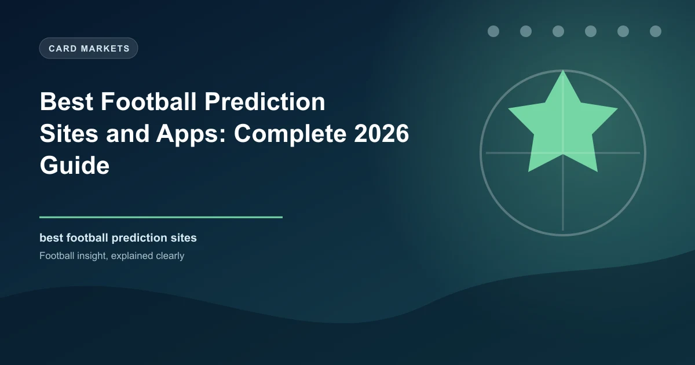

Best Football Prediction Sites and Apps: Complete 2026 Guide

Having the right tools can significantly improve your betting research. From statistical databases to AI-powered prediction services, the landscape of football prediction sites and apps has grown enormously. But not all platforms deliver equal value — and some are outright misleading.
In this comprehensive guide, we break down the different types of prediction tools, what to look for in a quality platform, how to use these tools effectively, and our picks for the best free and premium options available in 2026.
• Types of football prediction tools
• Key features to look for
• Free vs premium prediction sites
• How to use prediction tools effectively
• Common pitfalls to avoid
Types of Football Prediction Tools
Football prediction tools fall into four main categories, each serving a different purpose in your research process:
1. Statistical Databases
Statistical Databases
These provide raw data for your own analysis. They are the foundation of informed betting and include:
- Match statistics: Shots, possession, corners, cards, and other in-match data
- Team form guides: Recent results, home/away splits, and scoring patterns
- Player statistics: Goals, assists, minutes played, shots on target
- Head-to-head records: Historical results between two teams
- Advanced metrics: Expected goals (xG), expected assists (xA), and pressing data
Best for: Bettors who want to build their own models and do independent analysis.
Popular options include FBref (free, comprehensive xG data), Understat (free, excellent xG visualisations), WhoScored (free, detailed match ratings), and Transfermarkt (free, squad values and injury data).
2. Odds Comparison Tools
Odds Comparison Tools
These help you find the best prices across bookmakers:
- Compare odds across 50+ bookmakers in real time
- Track odds movements to identify market trends and sharp money
- Alert you to value when odds drift significantly from the market average
- Historical odds data for backtesting your strategies
Best for: All bettors. Finding the best odds is the simplest way to improve your long-term returns.
Oddschecker and OddsPortal are the industry leaders. Even a 0.05 improvement in odds per bet compounds to thousands of dollars over a year of regular betting.
3. Prediction Services
Prediction Services
These provide ready-made predictions and tips:
- Algorithm-based predictions generated by statistical models
- Expert tips and analysis from professional tipsters
- Community predictions aggregated from user votes
- AI-powered forecasts using machine learning models
Best for: Bettors who want quick, data-driven picks without building their own models.
This is where WinFulltime operates. Our AI-powered predictions analyse form, head-to-head data, scoring patterns, and market odds to generate daily picks across major leagues. The key difference: we provide transparent reasoning behind every prediction, not just a tip with no context.
4. Mobile Apps for Live Data
Live Data Apps
These provide real-time match information for in-play betting:
- Live scores and statistics updated in real time
- Match momentum indicators showing which team is dominant
- Live xG and shot maps for in-play analysis
- Lineup and substitution alerts for team news
Best for: In-play bettors who need fast, accurate live data.
Flashscore and SofaScore are the top free options for live match data. Both offer comprehensive coverage across 30+ sports with real-time updates.
Key Features to Look For
Not all prediction sites are created equal. Here are the essential features to evaluate when choosing a platform:
Transparency
The most important factor. Does the site publish its track record? Can you verify its historical predictions? Sites that refuse to share their win rate or only show winning tips should be avoided.
Data-Driven Approach
Quality prediction services base their picks on measurable data: form, statistics, xG, head-to-head records, and market odds. Be sceptical of services that rely on "expert intuition" without showing the data behind their picks.
Free vs Premium
Many sites offer both free and paid tiers. Free tiers typically include basic predictions and limited statistics. Premium tiers add advanced analytics, exclusive tips, and detailed form guides. Always test the free tier before committing to a paid subscription.
Pro Tip: Start Free, Upgrade Later
Begin with free tools like Flashscore, FBref, and WinFulltime's free predictions. If you find yourself needing more depth, then consider premium services. Many bettors find that free tools are sufficient for their research needs.
Free vs Premium Prediction Sites
Here is an honest comparison of what you get with free versus paid prediction services:
| Feature | Free Sites | Premium Sites |
|---|---|---|
| Basic predictions | Yes | Yes |
| Detailed statistics | Limited | Comprehensive |
| Advanced analytics (xG, xA) | Sometimes | Usually |
| Expert analysis | Rare | Common |
| Track record transparency | Varies | Varies |
| Mobile app | Usually | Usually |
| Cost | Free | $10-50/month |
The reality is that many premium prediction sites do not justify their cost. The best approach is to combine multiple free sources and invest in premium only if you find a service with a verified, transparent track record.
How to Use Prediction Tools Effectively
Having access to the best tools is only valuable if you use them correctly. Here is a step-by-step approach:
1. Combine Multiple Sources
No single tool has everything. Use a statistical database (FBref) for deep data, an odds comparison tool (Oddschecker) for the best prices, and a prediction service (WinFulltime) for quick, data-driven picks. Cross-referencing multiple sources gives you the most complete picture.
2. Verify Claims Independently
Be sceptical of any service claiming 80%+ accuracy. Most profitable bettors achieve 55-60% hit rates over the long term. Always verify a prediction service's track record before trusting their picks.
3. Use as Research Aids, Not Replacements
Prediction tools should supplement your own analysis, not replace it. Use them to validate your thinking, identify opportunities you may have missed, and find the best odds. Your own judgement should always be the final decision-maker.
4. Match Tools to Your Betting Style
Different tools suit different strategies. If you bet on BTTS markets, look for tools with detailed scoring and conceding data. If you focus on Asian Handicap betting, prioritise sites with strong form analysis and head-to-head data.
The Smart Bettor's Toolkit
Here is the ideal combination of free tools for most bettors:
- Daily predictions: WinFulltime (free AI-powered picks)
- Live scores: Flashscore or SofaScore (free, real-time)
- Statistics: FBref or Understat (free, comprehensive xG data)
- Odds comparison: Oddschecker (free, 50+ bookmakers)
- Team news: Transfermarkt (free, injury and lineup data)
Common Pitfalls to Avoid
No one can guarantee football results. Any site promising "guaranteed wins" or "90% accuracy" is likely misleading you. Profitable betting is about long-term edges, not certainty.
Even the best prediction service will have losing runs. Never place a bet without understanding the reasoning behind the pick. If you cannot explain why a bet has value, you should not be placing it.
The best prediction tools are useless without proper bankroll management. No matter how good your picks are, poor staking discipline will lead to losses. Always bet within your means.
Every prediction service has losing streaks. The key is to evaluate performance over hundreds of bets, not individual results. A 55% hit rate at odds of 2.00 is profitable over time, even if you lose 5 in a row.
The Bottom Line
The right prediction tools can enhance your betting research and help you make more informed decisions. However, no tool guarantees success. The best approach is to combine multiple free sources, use prediction services as research aids (not replacements for your own analysis), and always maintain disciplined bankroll management.
Start with free tools, build your knowledge, and only invest in premium services when you have verified their value through independent research. And remember: betting should be enjoyable. Never stake more than you can afford to lose.
Try WinFulltime's Free Predictions
Get AI-powered football predictions delivered daily across major leagues. Data-driven picks backed by real statistics — completely free.
View Today's Predictions →